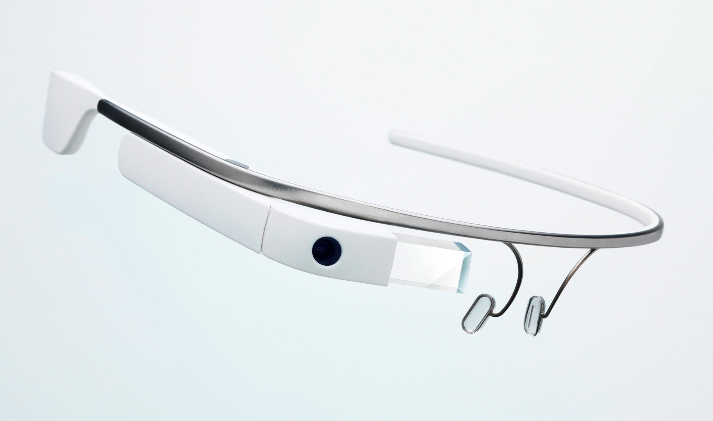

Google Glass és un dispositiu de visualització de realitat augmentada desenvolupada per Google.
El 23 de juny del 2014, Google va anuncioar el llançament de Google Glass fora dels Estats Units, arribant als consumidors dels Regne Unit per uns 1000€.
Funcionament
Les Google Glas tenen una mena de pantalla tàctil a la varilla de la derta amb aquesta pantalla, es controlen algunes parts de les Glass, la majoria de les coses es fan per reconeixement de veu.
Com a pantalla té un prisma que fa la funció d'una pantalla de 25 polsades a 2.5 metres de distància, té diferents sensors, micròfon i un altaveu. Té que anar sempre connectat al dispostitiu a través d'una aplicació de Google.
En el següent vídeo hi ha tota la informació sobre les Google Glass explicada:
Funcions i Prestacions
Les Google Glass ens ofereixen la possibilitat de trucar, fer trucades de vídeo, grabar, buscar infromació sobre algun tema a Internet, tot amb la veu i sense tenir que treure el mòbil de la butxaca.